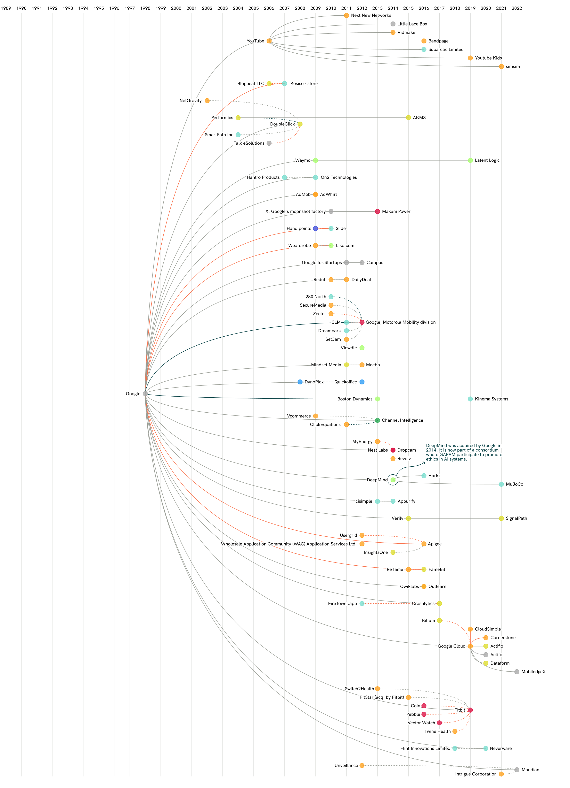

The rise of the big five has not been instantaneous, yet it is remarkable how many
advances have been made and the acceleration of each company over time. They
each sprouted ideas into large services that have remained industry standard, and
monopolize the digital landscape.

Overview/Summary
These are some of the key milestones illustrated in the infographic above, for each company:
Google
The Google search engine launched in 1998, and since its beginning it has launched
several other core services. In 2006, Google acquired YouTube, and over time, it has
had many acquisitions focused on AI, hardware, and robotics.
Apple
In 2012, acquired Authentec, enabling TouchID/biometric authentication.
They also made groundbreaking innovations with its chip-design in 2018.
Meta
Founded in 2004, Meta has grown at an unprecedented pace.
Meta has made several key plays, such as purchasing Instagram in 2012,
WhatsApp in 2014, and that same year purchasing Oculus to enter the virutal
reality and metaverse spaces.
Amazon
Originating as online retailer, Amazon has expanded to AWS, then into streaming
(through Twitch), and overall creating a large work environment.
Microsoft
Although Microsoft began its dominance with Windows/Office, it now has large
acquisitions in dev tools (GitHub), healthcare (Nuance), and gaming (Activision/
Blizzard/Xbox).